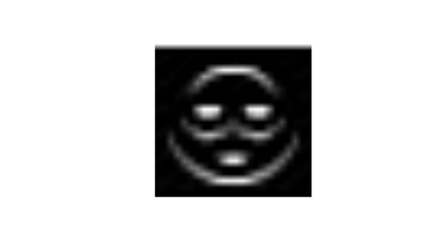
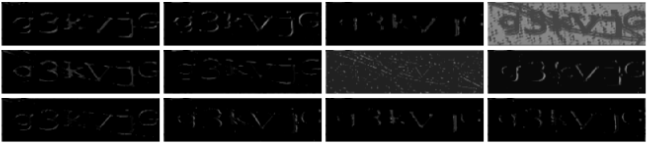
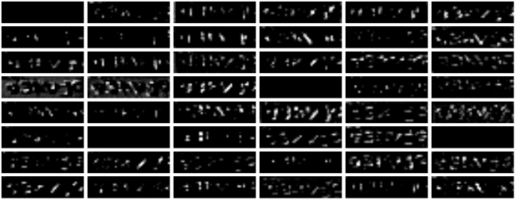
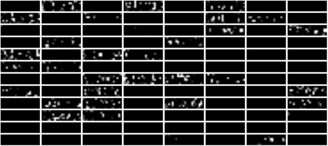

6.9 Redes neurais convolucionais
Nosso objetivo é aprender a aplicar a operação da convolução em imagens, replicando o modelo já ajustado dos captchas.
6.9.1 O que é convolução, afinal?
Convolução é uma técnica usada há muito tempo na área de visão computacional para aplicar filtros em imagens e detectar padrões. Basicamente, o que ela faz é calcular um novo valor para um pixel da imagem com base nos pixels da vizinhança. Por exemplo, você pode fazer com que o pixel \((i,j)\) da sua imagem seja atualizado pela soma ponderada dos valores dos pixels na vizinhança.
Uma forma esperta de fazer essa soma ponderada é criando uma matriz de pesos: dessa forma, você não precisa ficar procurando os pontos da vizinhança. Para cada ponto \((i,j)\), você pega o subset da matriz de vizinhança, multiplica pontualmente pela matriz de pesos e soma todos os valores. Isso é exatamente o que a convolução faz.
Daqui em diante, chamaremos essa matriz de pesos de kernel. Considere esse exemplo 3x3:
kern_horizontal <- rbind(c(-1,-1,-1),
c( 0, 0, 0),
c( 1, 1, 1))
kern_horizontal#> [,1] [,2] [,3]
#> [1,] -1 -1 -1
#> [2,] 0 0 0
#> [3,] 1 1 1E considere essa imagem super complexa:
"imgs/emoji3.png" %>%
magick::image_read() %>%
plot()Na prática, essa imagem é isso aqui (tirei algumas linhas e colunas):
emoji <- decryptr:::load_image("imgs/emoji3.png")[,,1]
round(emoji, 1)[1:10, 1:12]#> [,1] [,2] [,3] [,4] [,5] [,6] [,7] [,8] [,9] [,10] [,11] [,12]
#> [1,] 1 1 1 1.0 1.0 1.0 1.0 1.0 1.0 1.0 1.0 1.0
#> [2,] 1 1 1 1.0 1.0 1.0 1.0 1.0 1.0 1.0 1.0 1.0
#> [3,] 1 1 1 1.0 1.0 1.0 1.0 1.0 1.0 1.0 1.0 1.0
#> [4,] 1 1 1 1.0 1.0 1.0 1.0 1.0 0.8 0.7 0.7 0.7
#> [5,] 1 1 1 1.0 1.0 1.0 0.9 0.6 0.8 1.0 1.0 1.0
#> [6,] 1 1 1 1.0 1.0 0.8 0.7 1.0 1.0 1.0 1.0 1.0
#> [7,] 1 1 1 1.0 0.9 0.7 1.0 1.0 1.0 1.0 1.0 1.0
#> [8,] 1 1 1 1.0 0.6 1.0 1.0 1.0 1.0 1.0 1.0 1.0
#> [9,] 1 1 1 0.8 0.8 1.0 1.0 0.9 0.9 1.0 1.0 1.0
#> [10,] 1 1 1 0.7 1.0 1.0 0.7 0.4 0.2 0.7 0.9 1.0Tome por exemplo o ponto \((i,j) = (12,16)\). A vizinhança 3x3 em torno desse ponto é dada por
emoji[12 + (-1):1, 16 + (-1):1]#> [,1] [,2] [,3]
#> [1,] 0.9843137 0.5294118 0.7921569
#> [2,] 0.9725490 0.9882353 1.0000000
#> [3,] 0.9843137 1.0000000 0.9960784A operação de convolução é feita da seguinte forma:
sum(emoji[12 + (-1):1, 16 + (-1):1] * kern_horizontal)#> [1] 0.6745098Pronto, esse é o valor a ser colocado no ponto \((i,j)\). Fazemos isso para todos os outros pontos. Algumas dúvidas que podem rolar nesse ponto:
Exercício
- Qual o resultado se aplicarmos a convolução no ponto (12, 12)?
- Qual o resultado se aplicarmos a convolução no ponto (1, 1)?
Q: Mas os números não devem variar de 0 a 1?
R: Não! Para visualizar a imagem, você poderia normalizar essas quantidades (por exemplo, dividindo pelo máximo). Mas quem disse que o resultado da sua operação precisa ser visualizável? O resultado pode até ser negativo. Sem problemas.
Para visualização, por padrão os valores menores que zero são substituídos por zero (preto) e valores maiores que um são substituídos por um (branco).
Q: Mas e no canto da imagem, o que fazemos?
R: Nos cantos, você tem duas opções: 1) considerar apenas os pixels válidos, ou seja, pixels em que você consegue encaixar a matriz kernel inteira, resultando numa matriz de tamanho menor; ou 2) criar uma borda na imagem, preenchendo com zeros, para que toda a imagem fique com pixels válidos. Por isso que o keras disponibiliza as opções valid (apenas os válidos) e same (mantém a mesma dimensão).
Q: E se a imagem for colorida?
R: Boa pergunta! Se a imagem for colorida, você pode considerar um kernel diferente para cada cor, e depois você soma todos os valores. Mais pra frente, chamaremos as cores de canais, pois teremos muito mais do que 3 kernels.
Com base nisso, montamos um algoritmo que faz a conta para todos os pixels, já criando uma borda na imagem:
convolve <- function(img, kern) {
# monta a bordinha na imagem. A borda deve ter (tamanho kernel) / 2,
# de tamanho, arredondando para baixo
pad <- floor(dim(kern)[1] / 2)
img_pad <- matrix(0, nrow = nrow(img) + 2 * pad, ncol = ncol(img) + 2 * pad)
img_pad[pad + 1:nrow(img), pad + 1:ncol(img)] <- img[,,1]
# aplica a convolução nos pontos da imagem
for (i in seq_len(nrow(img))) {
for (j in seq_len(ncol(img))) {
img[i, j, 1] <- sum(img_pad[i + 0:(2 * pad), j + 0:(2 * pad)] * kern)
}
}
img[,,2] <- img[,,3] <- img[,,1]
img
}Exercício
- Qual é o problema do código acima?
Voltando para nossa imagem agora. No nosso caso, o resultado fica assim:
"imgs/emoji3.png" %>%
decryptr:::load_image() %>%
convolve(kern_horizontal) %>%
magick::image_read() %>%
plot()
Ficou um pouco assustador, não? Essa matriz não foi escolhida por acaso. Ela serve para destacar padrões horizontais da imagem. Como a primeira linha é formada -1s e a última é formada por 1s, a matriz fica com valor alto se a parte de cima do pixel for preta e a parte de baixo for branca (grande * 1 + pequeno * (-1)). A parte destacada da imagem acabou sendo os olhos (pois temos maior concentração de pixels pretos ali), além das extremidades superior e inferior do rosto.
Com esse kernel aqui (vertical), a parte destacada do rosto são as extremidades dos lados:
kern_vertical <- rbind(c(-1, 0, 1),
c(-1, 0, 1),
c(-1, 0, 1))
kern_vertical#> [,1] [,2] [,3]
#> [1,] -1 0 1
#> [2,] -1 0 1
#> [3,] -1 0 1"imgs/emoji3.png" %>%
decryptr:::load_image() %>%
convolve(kern_vertical) %>%
magick::image_read() %>%
plot()6.9.2 Aplicando nos captchas
Não tem segredo! Basta reaplicar o que já vimos. Vou apenas introduzir uma nova função chamada add_bias(), que simplesmente adiciona uma constante numérica para a matriz. Isso pode auxiliar na visualização, pois controlamos melhor os valores que ficam dentro do intervalo [0,1]. Lá na frente você entenderá o porquê do “bias”.
add_bias <- function (x, b) x + bEsse é o resultado de adicionar o kernel vertical e bias de 0.6.
arq <- "imgs/receita/captcha48ec12131bab.png"op <- graphics::par(mar = rep(0, 4))
arq %>%
decryptr:::load_image() %>%
convolve(kern_vertical) %>%
add_bias(.6) %>%
magick::image_read() %>%
plot()
Agora o kernel na horizontal. Note que identificamos padrões das linhas horizontais que tentam atrapalhar a visão das letras.
op <- graphics::par(mar = rep(0, 4))
arq %>%
decryptr:::load_image() %>%
convolve(kern_horizontal) %>%
add_bias(.6) %>%
magick::image_read() %>%
plot()Colocando um após o outro, temos um resultado bem esquisito:
op <- graphics::par(mar = rep(0, 4))
arq %>%
decryptr:::load_image() %>%
convolve(kern_horizontal) %>%
convolve(kern_vertical) %>%
add_bias(.5) %>%
magick::image_read() %>%
plot()Também vou introduzir uma função chamada relu() aqui. ReLu significa Restricted Linear Unit e é uma função bem simples que zera tudo aquilo que é negativo e mantém tudo aquilo que é positivo. Assim, temos:
relu <- function(x) (x + abs(x)) / 2
relu(-1)#> [1] 0relu( 3)#> [1] 3Para visualização, essa função não serve para muita coisa, pois já fazemos a substituição de valores negativos por zero. No entanto, podemos fazer combos com a aplicação de várias convoluções. O resultado dos combos não seria possível somente com somas e multiplicações.
Na prática, isso significa que com a aplicação de convoluções, bias e ReLu, podemos montar operações não lineares para extrair componentes da imagem.
Olhe o exemplo abaixo. Parece que consegui identificar bem as coisas que são inúteis na imagem.
op <- graphics::par(mar = rep(0, 4))
arq %>%
decryptr:::load_image() %>%
# primeira convolucao
convolve(kern_horizontal) %>%
add_bias(-.25) %>%
relu() %>%
# segunda convolucao
convolve(kern_vertical) %>%
add_bias(.1) %>%
magick::image_read() %>%
plot()Isso tudo nos leva a pensar: será que eu consigo pensar em kernels que me ajudem a identificar as letras de uma forma razoável?
6.9.3 E se pudermos usar kernels treinados?
A revolução da convolução aparece quando conseguimos obter kernels úteis por métodos estatísticos. Podemos pensar na matriz abaixo
\[ W = \left[\begin{array}{ccccc} w_{11} & w_{12} & w_{13} & w_{14} & w_{15} \\ w_{21} & w_{22} & w_{23} & w_{24} & w_{25} \\ w_{31} & w_{32} & w_{33} & w_{34} & w_{35} \\ w_{41} & w_{42} & w_{43} & w_{44} & w_{45} \\ w_{51} & w_{52} & w_{53} & w_{54} & w_{55} \end{array}\right] \]
e tentar encontrar os valores de \(W\) que minimizem alguma função de interesse. Podemos pensar que esses são os \(\beta\)’s de uma regressão logística, e queremos encontrar os valores que minimizam uma Loss ou maximizam uma verossimilhança. Nós também podemos fazer vários \(W\) como esse, sendo que cada um extrai alguma coisa de importante da imagem.
Nosso super modelo de magia negra nada mais é do que isso: a aplicação consecutiva de convolve(), add_bias() e relu(), mas com pesos escolhidos a dedo (ou por um moedor de carne super-poderoso como o keras).
Agora podemos ver nosso modelo atual da Receita Federal:
m <- decryptr::load_model("rfb")
m$model#> Model
#> ___________________________________________________________________________
#> Layer (type) Output Shape Param #
#> ===========================================================================
#> conv2d_4 (Conv2D) (None, 50, 180, 12) 312
#> ___________________________________________________________________________
#> max_pooling2d_4 (MaxPooling2D) (None, 25, 90, 12) 0
#> ___________________________________________________________________________
#> conv2d_5 (Conv2D) (None, 25, 90, 48) 14448
#> ___________________________________________________________________________
#> max_pooling2d_5 (MaxPooling2D) (None, 12, 45, 48) 0
#> ___________________________________________________________________________
#> conv2d_6 (Conv2D) (None, 12, 45, 96) 115296
#> ___________________________________________________________________________
#> max_pooling2d_6 (MaxPooling2D) (None, 6, 22, 96) 0
#> ___________________________________________________________________________
#> flatten_2 (Flatten) (None, 12672) 0
#> ___________________________________________________________________________
#> dense_3 (Dense) (None, 32) 405536
#> ___________________________________________________________________________
#> dropout_2 (Dropout) (None, 32) 0
#> ___________________________________________________________________________
#> dense_4 (Dense) (None, 210) 6930
#> ___________________________________________________________________________
#> reshape_2 (Reshape) (None, 6, 35) 0
#> ___________________________________________________________________________
#> activation_2 (Activation) (None, 6, 35) 0
#> ===========================================================================
#> Total params: 542,522
#> Trainable params: 542,522
#> Non-trainable params: 0
#> ___________________________________________________________________________O modelo aplica convolução 3 vezes consecutivas e faz algumas contas que não entendemos. Explico agora:
conv2d_: são as convoluções. As aplicações deadd_bias()erelu()estão escondidas aí dentro.max_pooling2d_: serve para simplificar a imagem. Isso ajuda a fazer computações mais rápido e ajuda a pegar mais relações entre partes da imagem, sem precisar mudar o tamanho dos kernels.dropout_: é utilizado para regularização. Serve para evitar que seu modelo quebre apenas o captcha que você tem na base, e não novos captchas que chegam. Na prática, o dropout joga fora uma parte dos \(W\) obtidos. Se você consegue prever coisas bem sem esses \(W\), isso significa que eles não são tão úteis assim.flatten_ereshape_: não fazem nada demais, só reorganizam os parâmetros de matriz para um vetor ou de vetor para matriz. Isso é útil pois i) depois de aplicar os kernels, nós misturamos todos os parâmetros resultantes e ii) no final, precisamos prever 6 letras, então precisamos deixar as probabilidades numa matriz.dense_: são camadas de redes neurais comuns como as que vimos antes, próximas da regressão logística.
NÃO NOS ABANDONE AQUI!!! Se você não estiver entendendo direito, saiba apenas que a execução de um modelo de deep learning envolve somente
- Pegar o input (imagem).
- Multiplicar (convoluir) por alguns pesos \(W\).
- Adicionar um viés (ou bias, ou intercepto) \(b\).
- Aplicar uma função não linear, por exemplo ReLu.
- Voltar para 2 várias vezes (o deep vem daí).
- Pegar os pesos finais e normalizar (usando, por exemplo, softmax) para obter probabilidades dos resultados.
No nosso caso, repetimos o passo 2 três vezes, aplicando três convoluções seguidas.
6.9.4 Primeira convolução
Para obter os valores de kernels ajustados pelo modelo, podemos usar a função get_weights() do keras. Nessa primeira parte, utilizamos 12 kernels 5x5.
w <- keras::get_weights(m$model$layers[[1]])[[1]]
w_list <- purrr::map(seq_len(dim(w)[4]), ~w[,,1,.x])
bias <- keras::get_weights(m$model$layers[[1]])[[2]]
w_list[[1]]#> [,1] [,2] [,3] [,4] [,5]
#> [1,] 0.15733875 0.06014036 -0.07475707 -0.11879896 -0.02915078
#> [2,] -0.01640752 -1.73096466 -3.13373542 -1.80763698 -0.22003661
#> [3,] -1.05918467 -4.39883375 -3.81658459 -0.63352644 0.02517573
#> [4,] -0.10511240 -0.15641896 -0.13479255 0.20692091 -0.05898214
#> [5,] -0.09028889 0.08591988 0.11906113 0.04569587 -0.00889198Os doze valores de bias estimados pelo modelo (um para cada matriz) são dados por
round(bias, 3)#> [1] 0.150 0.013 0.181 -0.275 0.179 0.040 -0.128 -0.036 0.030 0.042
#> [11] 0.201 0.043Para cada um dos doze kernels, calculamos uma matriz convoluída. Esses os resultados que o modelo entende serem úteis para prever o captcha.
O código abaixo aplica convolve(), add_bias() e relu() para todos os kernels. Para isso usamos o purrr. Se você não entende purrr, leia este maravilhoso post do Caio Lente.
conv1 <- purrr::map2(w_list, bias, ~{
arq %>%
decryptr:::load_image() %>%
convolve(.x) %>%
add_bias(.y) %>%
relu()
})E como será que ficam essas imagens? Abaixo, temos o resultado da aplicação dos doze kernels. A maioria parece estar extraindo partes das letras. A sétima (posição (2,3)) parece estar pegando o ruído e a quarta parece guardar a imagem original.
conv1_img <- purrr::map(conv1, magick::image_read)
par(mfrow = c(3, 4), mar = c(.1,.1,.1,.1))
purrr::walk(conv1_img, plot)
O gif animado abaixo mostra a aplicação do oitavo kernel da nossa lista. Com esse kernel dá pra pegar bem o padrão das letras, não é?
convolve_image <- function(img, kern) {
pad <- floor(dim(kern)[1] / 2)
img_pad <- matrix(0, nrow = nrow(img) + 2 * pad, ncol = ncol(img) + 2 * pad)
img_pad[pad + 1:nrow(img), pad + 1:ncol(img)] <- img[,,1]
d <- tibble::tibble(i = 0, j = 0, img = list())
for (i in seq_len(nrow(img))) {
for(j in seq_len(ncol(img))) {
img[i,j,1] <- sum(img_pad[i + 0:(2 * pad), j + 0:(2 * pad)] * kern)
}
img[,,2] <- img[,,3] <- img[,,1]
d <- tibble::add_row(d, i = i, j = j,
img = list(magick::image_read(img) %>%
magick::image_scale("300%")))
}
d
}
arq %>%
decryptr:::load_image() %>%
convolve_image(w_list[[8]]) %>%
with(img) %>%
magick::image_join() %>%
magick::image_animate(fps = 100) %>%
magick::image_write("imgs/captcha_conv.gif")
magick::image_read("imgs/captcha_conv.gif")No próximo nível, vamos convoluir mais 48 kernels. Essa operação será feita com todos os doze filtros atuais, ou seja, é uma contaiada que não acaba mais. Para simplificar as contas e para permitir a obtenção de padrões diferentes, faz sentido simplificar a imagem. Para isso, usamos o max pooling.
6.9.4.1 Aplicando max pooling
O max pooling simplesmente pega o pixel de maior valor dentro de uma janela. No caso, estamos usando uma janela 2x2 e aplicamos ela igualzinho convolução, só que ao invés de pegar a soma ponderada dos pixels, pegamos o pixel máximo. Outra diferença é que ao invés de andar o pixel de 1 em 1, andamos de 2 em 2. Assim cada janelinha é considerada apenas uma vez (esse é o conceito de strides, que não vamos discutir aqui).
Montei esse algoritmo que faz max pooling:
max_pool <- function(img) {
# monta a matriz com metade da resolução
x_new <- matrix(0.0, nrow = floor(nrow(img) / 2), ncol = floor(ncol(img) / 2))
# adiciona uma bordinha para o caso da matriz ter um número ímpar de pixels
# por exemplo, se ela é 51x181, daria bug se não adicionar a bordinha
img <- cbind(rbind(img[,,1], 0), 0)
# percorre a matrix pegando o máximo das janelinhas
for (i in 1:nrow(x_new)) {
for (j in 1:ncol(x_new)) {
x_new[i, j] <- max(img[i * 2 - 1 + 0:1, j * 2 - 1 + 0:1])
}
}
array(x_new, c(dim(x_new), 3))
}A aplicação da primeira convolução com max pooling é feita igual anteriormente:
result_conv1 <- purrr::map2(w_list, bias, ~{
arq %>%
decryptr:::load_image() %>%
convolve(.x) %>%
add_bias(.y) %>%
relu() %>%
max_pool()
})No final, temos essas imagens com resolução 25x90 (as originais são 50x180).
op <- graphics::par(mar = rep(0, 4))
par(mfrow = c(3, 4), mar = c(.1,.1,.1,.1))
result_conv1 %>%
purrr::walk(~plot(magick::image_read(.x)))Ficou bem parecido com o anterior!
Ao final da convolução, é como se tivéssemos uma nova imagem, menor e alterada, mas com 12 cores. Como não faz muito sentido pensar em 12 cores primárias, vamos chamá-las de canais.
6.9.5 Segunda convolução
Os parâmetros da segunda convolução são obtidos novamente pelo keras. Sugiro que você dê uma olhada nesses índices para entender o que exatamente estamos pegando.
w2 <- keras::get_weights(m$model$layers[[3]])[[1]]
bias2 <- keras::get_weights(m$model$layers[[3]])[[2]]
dim(w2)#> [1] 5 5 12 48Agora temos 12 * 48 kernels 5x5 a serem aplicados. Precisamos seguir essas operações:
- Para cada uma das 48 matrizes:
- Faça a convolução das 12 matrizes obtidos na convolução anterior pelos 12 kernels atuais e some os valores obtidos.
- Adicione o bias.
- Faça a ativação com ReLu.
- Aplique o max pooling.
Logo, temos 2 laços. O código para fazer isso fica assim:
result_conv2 <- purrr::map(1:dim(w2)[4], ~{
kern <- w2[,,,.x] %>%
plyr::alply(3, identity) %>%
purrr::map(as.matrix)
actual_bias <- bias2[[.x]]
purrr::map2(result_conv1, kern, convolve) %>%
purrr::reduce(magrittr::add) %>%
add_bias(actual_bias) %>%
relu() %>%
max_pool()
})Plotamos os 48 resultados abaixo. Alguns resultados foram completamente zerados (eles devem ser úteis em outros captchas mais esquisitos), enquanto os demais pegam pedaços da imagem anterior que mal lembram o captcha original. A imagem da posição (4,1) é uma das únicas que mostra o captcha claramente. Isso mostra uma coisa comum do deep learning: quanto mais profundo vamos, menos entendemos o que de fato o modelo está fazendo. Recomendo fortemente a leitura desse blog do distill, que discute o assunto detalhadamente
op <- graphics::par(mar = rep(0, 4))
par(mfrow = c(8, 6), mar = c(.1,.1,.1,.1))
purrr::walk(result_conv2, ~plot(magick::image_read(.x)))
Agora temos 48 canais de uma imagem com dimensões 12x45. Vamos em frente.
6.9.6 Terceira convolução
A terceira convolução é feita de forma idêntica à segunda. A única diferença é que teremos no final 96 canais, pois estamos ajustando essa quantidade de kernels para cada canal.
w3 <- keras::get_weights(m$model$layers[[5]])[[1]]
bias3 <- keras::get_weights(m$model$layers[[5]])[[2]]
dim(w3)#> [1] 5 5 48 96Revisando o algoritmo:
result_conv3 <- purrr::map(1:dim(w3)[4], ~{
kern <- w3[,,,.x] %>%
plyr::alply(3, identity) %>%
purrr::map(as.matrix)
actual_bias <- bias3[[.x]]
purrr::map2(result_conv2, kern, convolve) %>%
purrr::reduce(magrittr::add) %>%
add_bias(actual_bias) %>%
relu() %>%
max_pool()
})Plotando os resultados, temos
par(mfrow = c(12, 8), mar = c(.1,.1,.1,.1))
purrr::walk(result_conv3, ~plot(magick::image_read(.x)))
No final, ficamos com 96 imagens com resolução 6x22 cada. Várias imagens ficaram zeradas e as que não ficaram parecem apenas feixes de luz no meio do breu. Pode ser que a posição dessas luzes tenha a ver com a posição de pedaços importantes do captcha original, que por sua vez seriam importantes para determinar o valor do captcha.
6.9.6.1 Visualizando na imagem original
Aqui fiz um esforço para tentar entender de qual parte da imagem original esses resultados estão pegando informações. Para isso, re-escalei essas imagens de resolução mais baixa na última convolução para o tamanho original do captcha (50x180) e depois multipliquei os valores das matrizes pelos valores da imagem original.
O resultado foi esse gif. Cada imagem é um dos canais obtidos.
op <- graphics::par(mar = rep(0, 4))
mat_captcha <- 1 - decryptr:::load_image(arq)[,,1]
imagens_alteradas <- purrr::imap(result_conv3, ~{
.x %>%
magick::image_read() %>%
magick::image_scale("180x!50") %>%
as.raster() %>% {
apply(., 2, function(x) col2rgb(x)[1,]) / 255
} %>%
magrittr::multiply_by(mat_captcha) %>%
array(dim = c(dim(.), 3)) %>%
magick::image_read() %>%
magick::image_scale("400%") %>%
magick::image_annotate(as.character(.y), color = "white", size = 40)
}) %>%
magick::image_join() %>%
magick::image_animate(fps = 1)
imagens_alteradasParece que os filtros são capazes de pegar as curvas que as letras fazem no captcha. Mas não tenho opinião formada sobre isso.
6.9.7 Passos finais
Para acabar a predição do captcha, nós pegamos os resultados das imagens anteriores e juntamos todos os pixels num vetorzão que junta tudo. Em estatistiquês, esse vetor nada mais é do que uma linha de um data.frame, que podemos usar numa regressão logística, por exemplo.
Ou seja, essas convolucionais funcionam como um grande gerador automático de features importantes para prever os resultados do captcha. A vantagem é que essas features são obtidas de forma automática e são otimizadas dentro do processo de estimação. Por essas e outras que deep learning é realmente sensacional!
Como já estamos no framework do keras, acabamos fazendo tudo lá dentro. Após jogar tudo no vetorzão, aplicamos mais dois layers de redes neurais comuns, que funcionam como a regressão logística. O único detalhe sensível é que, como estamos prevendo 6 letras ao mesmo tempo, precisamos novamente transformar esse vetor em uma matriz 35x6, sendo 35 o total de letras possíveis por posição e 6 a quantidade de posições.
Abaixo, montei uma tabelinha com as probabilidades de cada letra nas posições correspondentes. Substituí valores muito pequenos por . para ver melhor.
captcha <- read_captcha(arq)
X <- array(dim = c(1, nrow(captcha[[1]]$x), ncol(captcha[[1]]$x), 1))
X[1, , , ] <- captcha[[1]]$x
res2 <- keras::predict_proba(m$model, X)
probabilidades <- res2[1,,] %>%
tibble::as_tibble() %>%
purrr::set_names(m$labs) %>%
tidyr::gather(letra, prob) %>%
dplyr::group_by(letra) %>%
dplyr::mutate(pos = 1:n()) %>%
dplyr::ungroup() %>%
dplyr::mutate(prob = dplyr::if_else(prob < 5e-5, ".",
as.character(round(prob, 6))) ) %>%
tidyr::spread(pos, prob, sep = "")knitr::kable(probabilidades)| letra | pos1 | pos2 | pos3 | pos4 | pos5 | pos6 |
|---|---|---|---|---|---|---|
| 1 | . | . | . | . | . | . |
| 2 | . | . | . | . | . | . |
| 3 | . | 0.999983 | . | . | . | . |
| 4 | . | . | . | . | . | . |
| 5 | . | . | . | . | . | . |
| 6 | . | . | . | . | . | . |
| 7 | . | . | . | . | . | . |
| 8 | . | . | . | . | . | . |
| 9 | . | . | . | . | . | . |
| a | . | . | . | . | . | . |
| b | . | . | . | . | . | . |
| c | . | . | . | . | . | . |
| d | . | . | . | . | . | . |
| e | . | . | . | . | . | . |
| f | . | . | . | . | . | . |
| g | 1 | . | . | . | . | 0.999996 |
| h | . | . | . | . | . | . |
| i | . | . | . | . | . | . |
| j | . | . | . | . | 1 | . |
| k | . | . | 0.999987 | . | . | . |
| l | . | . | . | . | . | . |
| m | . | . | . | . | . | . |
| n | . | . | . | . | . | . |
| o | . | . | . | . | . | . |
| p | . | . | . | . | . | . |
| q | . | . | . | . | . | . |
| r | . | . | . | . | . | . |
| s | . | . | . | . | . | . |
| t | . | . | . | . | . | . |
| u | . | . | . | . | . | . |
| v | . | . | . | 0.994037 | . | . |
| w | . | . | . | . | . | . |
| x | . | . | . | 0.000151 | . | . |
| y | . | . | . | 0.005796 | . | . |
| z | . | . | . | . | . | . |
Ficamos então com “g” na primeira posição, “3” na segunda posição, “k” na terceira posição, “v” na quarta posição, “j” na quinta posição e “g” na sexta posição. Ou seja, “g3kvjg”.
Vamos ver a imagem novamente:
arq %>%
read_captcha() %>%
plot()Parece que funcionou!
6.9.8 Wrap-up
Resumindo:
- Convoluções são somas ponderadas dos valores da vizinhança de um pixel. Esses pesos são dados por uma matriz chamada kernel.
- Aplicar redes neurais convolucionais consiste em i) aplicar convolução; ii) adicionar um bias; iii) aplicar uma função não linear (geralmente ReLu).
- max pooling serve para simplificar a resolução da imagem.
- Na prática, aplicamos vários kernels. O número de kernels de uma convolucional igual ao número de canais da operação anterior (input), multiplicado pelo número de canais que queremos de output.
- Para a convolução inicial, os canais são as cores: partimos de 1 canal se a imagem for preto e branco ou 3 canais se for colorida.
- No nosso caso, aplicamos três convolucionais com kernels 5x5, sendo
1*12no primeiro nível,12*48no segundo nível e48*96no terceiro nível. - Depois, pegamos as imagens resultantes e aplicamos o
flatten, para trabalhar com esses números como se fossem a matrizXde uma regressão logística usual. - Como vimos, é possível implementar todas essas operações na mão sem muita dificuldade.